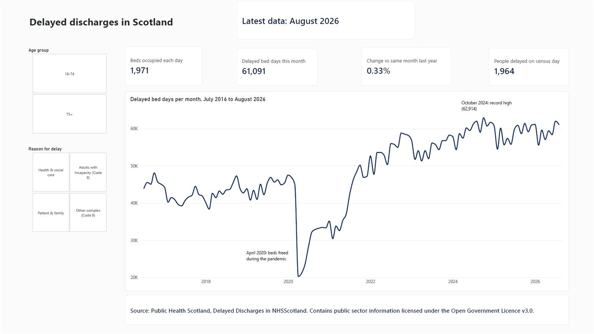
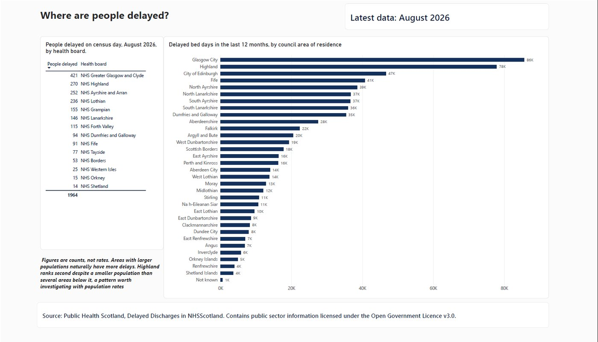
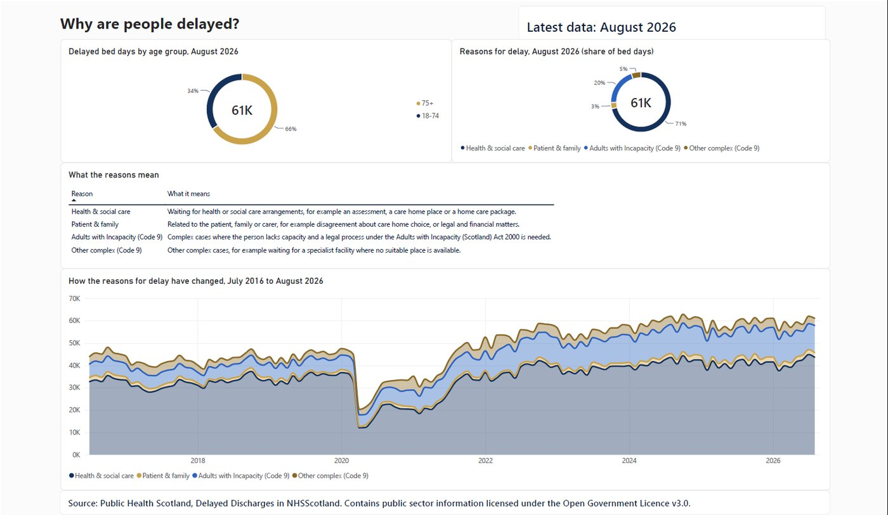

At a glance (August 2026)
The question
A delayed discharge happens when someone is medically ready to leave hospital but cannot, often because care at home or a care home place is not yet arranged. Every delayed day is a bed that another patient cannot use, and a person waiting in hospital longer than they need to.
Working in Scottish health and social care, I wanted to see the national picture: how big the problem is, where it is concentrated, and why it happens. This dashboard answers those three questions on three pages.
The dashboard
1. Overview: key figures for the latest month and the monthly trend since 2016, with filters for age group and reason.

2. Where are people delayed? Council areas ranked by delayed bed days over the last 12 months, and people delayed by health board.

3. Why are people delayed? Reasons and age groups for the latest month, what each reason means, and how the mix of reasons has changed.

What the data shows
- The problem is at record levels. Delayed bed days fell sharply in April 2020 as hospitals freed beds during the pandemic, then climbed to the highest levels in the series, peaking at 62,914 in October 2024.
- It is mainly a social care capacity issue. Health and social care reasons, such as waiting for an assessment, a care home place or a care package, account for 71% of delayed bed days. A further 20% involve Adults with Incapacity legal processes.
- Older people are most affected. Two thirds of delayed bed days are for people aged 75 and over.
- Size alone does not explain the ranking. Highland ranks second despite a smaller population than several areas below it, which population-based rates would test properly.
How I built it
- Data preparation (Python): downloaded four files from the Public Health Scotland open data portal, removed pre-calculated totals so nothing can be double-counted, and replaced area codes with names using the official geography lookups.
- Validation: checked that reasons, age groups and council areas add up exactly to the published Scotland totals for every month.
- Data model: a star schema with two fact tables and five dimension tables, joined by eight one-to-many relationships.
- DAX: 17 measures, including average daily beds, year-on-year change, a rolling 12-month total and percentage shares, written to work with a monthly date table.
- Design: a custom theme, plain-English titles and labels, annotations for key events, and a source credit on every page.
Limitations and next steps
Figures are counts, not rates, so larger areas naturally show more delays. Census figures are a snapshot on one day each month and cannot be added across months. Bed days are recorded by council area of residence, while census delays are by health board, so the two are not compared directly. The next step is adding population estimates from National Records of Scotland to compare areas fairly.
Source: Public Health Scotland, Delayed Discharges in NHSScotland. Contains public sector information licensed under the Open Government Licence v3.0. Independent analysis, not endorsed by Public Health Scotland or the NHS.